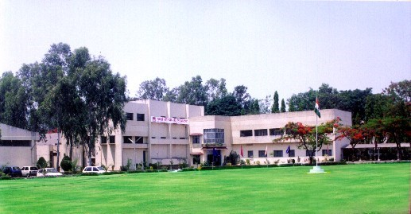

Historical Background

Indian Oil Corporation’s Business Group (Cryogenics) [BG(Cryo.)] was a part of erstwhile IBP Company
Limited and was established in early 1960 to look into diversified engineering related areas. It
took lead in introducing various product lines ranging from biscuit ovens, bottling plants, LPG
valves and regulators to electronic items like Blind temperature controllers.
BG (Cryo.) ventured into emerging field of vacuum and cryogenics in 1970s with the help of Bhabha
Atomic Research Centre (BARC).Inspired by Late DR. Kurien’s vision to revolutionize milk production
in the country, Nashik Plant was set up for manufacturing small cryogenic containers used for
storage of Liquid Nitrogen with know-how from L’Air Liquide, France in 1980.The main purpose was to
meet growing demand for Liquid Nitrogen Dewars indigenously, which were imported at that stage.
These small cryogenic storage containers now popularly known as CRYOCAN are basically for storage
and preservation of bull semen for breed improvement through artificial insemination. This was a
small step in making India self sufficient in bull semen preservation technology a crucial
requirement of Artificial Insemination to enhance milk yield.
Thus expertise gained in the field of vacuum and cryogenics was extended to make various other
products and equipments Viz. Lyophilisers , Vacuum Metalizing plants, Environment Test Chambers,High
Altitude simulation chambers,Vacuum heat treatment/Brazing Furnaces,Auto claves , Solar Thermal
Systems with Evacuated Tube Solar Collectors,Lin/Lox/LAr and LNG Cryovessels,Pressure vessels etc.
With the changing business scenario , BG(Cryo) consolidated its product portfolio’s to align with
Indian Oil’s Core business ,focusing mainly on Cryogenic containers , Pressure vessels for
Refineries,Lube equipments and the latest addition being Aviation equipments.
Every time a satellite is launched or a missile is test fired , IOCian has a reason to rejoice as it
may have been tested in the Simulation chamber manufactured at BG(Cryo).
Whenever a cryogenic engine is fired it might be fuelled through a Lox storage vessel having
BG(Cryo) tag, LCA Tejas maneuvering in sky reminds that its carbon composite rudder/wing parts might
be fabricated in Autoclaves supplied by BG(Cryo) or after a tiring flight a dare devil fighter pilot
is treated for Oxygen deficiency it may be in Hyper baric Oxygen (HBO) therapy chamber installed by
BG(Cryo) or every time a nuclear fuel is loaded the fuel rods might have undergone heat treatment at
equipment supplied by BG(Cryo).
This plant has immensely contributed in realizing dreams of visionaries like Late Dr.Kurien and Late
Dr. A.P.J Abdul Kalam in making India self reliant ,be it of increasing milk production or of
protecting Indian lives.
Today BG(Cryo) is a market leader with over 35 years of expertise in Cryogenic and Vacuum
engineering. With its glorious past of serving the nation during crucial days of embargo IOCL
Cryogenics is poised to take a big leap to mark its imprint not only in Cryogenics but also in
Energy sector.